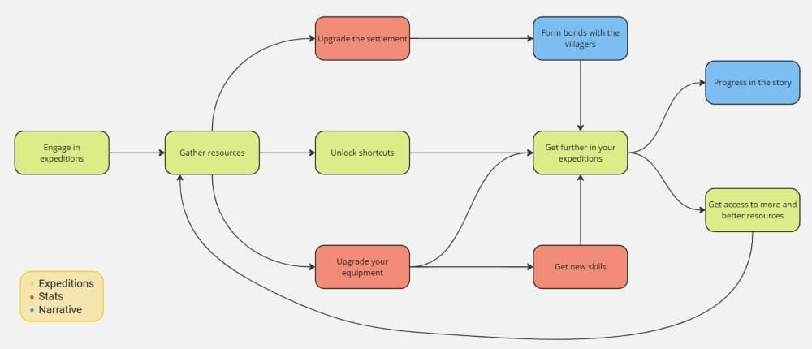

In 2024, I finally decided to take a shot at my dream job and started studying Game Design in Level Up. I took a bootcamp where I learnt the basics of Game Design, and for the final project we had to design our own game from scratch and develop the document designs needed for a first preproduction phase. Finally, as the last task, we had to pitch our game to our colleagues and partners of the academy.
In this article, I will be doing a post-mortem of my game, New Home, analyzing what went well, what I could have done better and then reflecting on how I have evolved as a Game Designer since then.

Credits to: Daniel Clarke
Conceiving New Home
Before deciding on a game to develop, we had a preliminar task of developing a One-Pager of our ideas where we pitched a very brief and streamlined concept in order to get feedback from our colleagues and deciding on a final idea. We had to describe the core mechanics, progression and aesthetic; as well as how the game would be played. We also had to pitch the idea as it would be presented to a stakeholder, so we also had to touch on selling points and develop a market study. You can see the One-Pager in here (please be kind to my sketch, I was trying my best to present how the main camera would look like).
New Home wasn't my intended idea. It was actually conceived to make an opposition to the game I intended to make called Escape the Dark. However, when I practised both pitches with my friends, they seemed to like more New Home, so I started to actually think about it and I liked the idea. New Home was conceived as a AA game, so I wouldn't be able to do it nowhere in the near future due to its scope. However, taking on a big challenge as my first task as a Game Designer sounded good, not because I thought I could make it, but rather because I would hit all the bumps in the road on my first go so I knew what to expect the next time.
The pitch day came, and unsurprisingly, New Home gave a better impression. So it was settled. I was going to conceptualize a AA game as my first shot as a Game Designer.

My first High Concept Document
Then we started the process of developing a High Concept Document for our games. We had to deliver the HCD plus two additional documents that would be helpful for the preproduction of our game, which in New Home's case were a Level Design Document for a first level that would showcase every aspect of the game loop and a balance document on how the enemies' stats would look like.
We had a template we could follow, so I went on with it. Some of the highlights on this High Concept Document are:
- Player Target Persona: Envisioning your target player was very helpful when having to make a decision on subjective parameters, such as the level of challenge or the weight of the narrative versus gameplay. For New Home, I envisioned a Gladiator persona, a player that engage with a challenging and skill-based experience.
- Game Loop: I knew that I wanted to create an experience that would revolve around the settlement system, so I divided the loop in two sections, the settlement and the incursions. The player would be forced to go back to the settlement to replenish and upgrade their loadout, getting to interact with the refugees and crafting system.

- Scope: Since I envisioned New Home as a AA project, the scope was very big. Thanks to laying out the required assets, I could come up with a cost estimation for a vertical slice. However, reading it with the experience I have right now is absolutely delusional. Not that it wouldn't be able to manage it, but if I had to do it nowadays I would change a lot of things and definitely make some space for delays.
- Game Systems: This section is too long to fully comment on it, but honestly, I would say it holds up pretty well. However, there is too much text which can be tough to read so some images and references to other games would definitely help; plus I miss some explanation on some of the decisions made.
But definitely, the part that helped the most was laying out the entire Player Journey. This not only helped me greatly to define the scope, tie up the narrative and emotional flow and defining the rhythm of the progress; but also made it seem like a real project, something that could actually be made. Thanks to this experience, building up the Player Journey is one of the first deliverables I make in my projects in order to envision it and validate the idea.

Level Design
One of the highlights of New Home is its iterative progression, where the players have to go on incursions to different biomes and going back to the settlement once they get defeated in order to upgrade and replenish their resources. So I had to create a concept level where this progression could be showcased. The result was this Miro document where I layed out the specific of this level.
Except one thing that now I can see its missing from the template, which is a thourough explanation of the flow of the level. I am missing symbol and color legends to interpret the layout, a showcase on how the player would navigate the level and an explanation on the reasoning for some of these decisiones. Fortunately, I still remember what everything is supposed to be, so I will explain it here:
- The black path is the main path that the player would take, facing of a series of enemies marked with an X increasing in difficult as you go on. The triangles are mini-bosses and the double triangle is the final boss for the area.
- The blue path are the shorcuts the player can access once they obtain the items also marked blue and a number. Once they gather these objects, they could craft a shortcut item that they could use to open the blue paths shortening the path and facing tough enemies that are harder than every enemy on the main path individually but easier than taking all of them. This would not only benefit the progression of the player, but would also refresh the encounters up to their last checkpoint by providing less friction and a more worthy challenge.
- The yellow zone is a bonus room that you would get access much later in the game. Inside of it would be a very tough optional boss that, when defeated, would grant a huge boost in resources. Players could choose to attempt this boss instead of trying and pushing their last checkpoint in order to complete a mission and gain upgrades, showcasing that not every incursion would have the objective of going as far as the player could.

There are still a lot of things that are missing from this explanation, and much more important the reasoning behind them. So yeah, that was a miss. However, I still really like the idea behind this level. There are a lot of nuanced elements, such as getting access to shortcuts in a biome by progressing in other or having to go through the first enemies in the level to get to the biggest shortcut to force advanced players to see how much they have progressed. The design is very cool, and I think I did a good job designing it. If only I wrote it down...
Pitching New Home
I have to say, I wasn't exactly a spokesman. I usually got very nervous and had to memorize the entire pitch because I would ramble if not, but since I wanted to get it out as quickly as possible, I spoke very fast. Plus, there were a lot of techniques that I wasn't even aware of that could have greatly improve my presentation, such as making eye-contact with the camera or putting GIFs on the presentation. Needless to say, it didn't go as great as I would have liked. However, it went good enough. My colleagues and teacher knew how much effort and dedication I put into it, and I was very happy on the result.
But actually, I had a rematch on the pitch when, almost a full year later, Level Up contacted me to make a video for their Demoday explaining my experience while studying with them and, of course, talking about New Home. It wasn't exactly a sales pitch, but I am far happier on my results on that presentation. I still have a lot of room to improve, but I'm getting better and better. You can check it out here:
Feedback of my colleagues and mentors
Even though the presentation didn't go as smooth as I wanted, I was happy with New Home. And my colleagues were too. We had a very collaborative experience where we helped each other out on parts where we were struggling, often checking out other's projects to see how they solved certain situations. So we had a good grasp on what each of us were developing. Thanks to that, I got great feedback during this preproduction, and I learnt that I really appreciate when people give me feedback on my work.
About my mentors, they were very proud of my progress. You can actually see some of the conversations that I had with Roger Montserrat, the director of Level Up, on my HCD. We would often engage in back and forth conversations to fully develop some parts of the game.
And it would seem that it went really well, because when the bootcmap ended, Roger ended up offering me a role in Hidalgo's development as a Game Designer under their mentorship. It is safe to say that I wouldn't be where I am right now if I hadn't given my best shot at New Home, and for that, I will always be grateful for it.

Conclusions
So yeah, developing a AA game as your first project, even if you don't move on to production, is really tough. I hit every bump on the road until it was flattened. However, it worked. Thanks to all that experience I gained taking on this challenge, I can now take on big challenges without hesitation. Taking on a Game Design Document doesn't feel scary anymore, but rather exciting and fresh. And that is something that I wouldn't notice until a year later, when I started the production of Patapan. Everything felt natural, and I was far more confident that time.
New Home was a very ambitious idea, too much for my own sake. I doubt that it will ever see the light, and even if it does, it will probably look very different. But this game will always hold a special place in my heart.